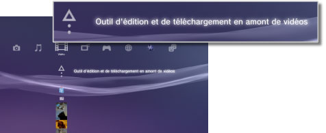
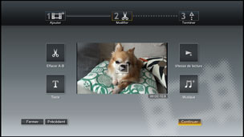

Vidéo > Édition du contenu vidéo
Édition du contenu vidéo
Vous pouvez modifier du contenu vidéo sauvegardé dans le stockage système du système PS3™.
1. |
Sélectionnez |
|---|---|
|
 |
|
2. |
Sélectionnez |
3. |
Sélectionnez |
4. |
Modifiez la vidéo. |
|
 |
|
5. |
Sélectionnez [Terminer]. |
 (Vidéo) >
(Vidéo) >  (Créer une nouvelle vidéo).
(Créer une nouvelle vidéo). (Modifier) permet de supprimer des scènes spécifiques ou d'ajouter du texte (ou des caractères). Suivez les instructions affichées pour achever l'opération. Vous pouvez afficher l'aperçu de la vidéo en sélectionnant
(Modifier) permet de supprimer des scènes spécifiques ou d'ajouter du texte (ou des caractères). Suivez les instructions affichées pour achever l'opération. Vous pouvez afficher l'aperçu de la vidéo en sélectionnant  .
.Conseils
- Vous pouvez sélectionner
 (Ajouter) à l'étape 3 pour continuer à ajouter des éléments de contenu et les combiner dans un fichier vidéo unique.
(Ajouter) à l'étape 3 pour continuer à ajouter des éléments de contenu et les combiner dans un fichier vidéo unique. - La lecture d'un contenu vidéo modifié ne peut pas dépasser une heure.
- Vous pouvez ajouter jusqu'à 16 éléments de texte dans un même écran et jusqu'à 200 éléments de texte dans un même fichier vidéo modifié.
- Vous ne pouvez utiliser que des morceaux prédéfinis comme musique de fond de votre vidéo. Il est impossible d'utiliser des morceaux sauvegardés dans le stockage système du système PS3™ ou sur un autre support de stockage.
Types de fichiers pouvant être modifiés
Les types de fichiers suivants peuvent être modifiés sous  (Outil d'édition et de téléchargement en amont de vidéos).
(Outil d'édition et de téléchargement en amont de vidéos).
- Contenu vidéo sauvegardé dans le stockage système à partir d'un support de stockage ou d'un périphérique de stockage de masse USB (logiciel système version 3.40 ou ultérieure).
- Contenu vidéo téléchargé sur le stockage système à partir d'un
 (Navigateur Internet) (logiciel système version 3.40 ou ultérieure).
(Navigateur Internet) (logiciel système version 3.40 ou ultérieure).
Conseils
- Il n'est pas possible de modifier une vidéo sauvegardée dans le stockage système avant la mise à jour du logiciel système vers la version 3.40, une vidéo protégée par les droits d'auteurs ou un contenu soumis à des restrictions du contrôle parental.
- Veillez à ne pas enfreindre la propriété intellectuelle de tiers.